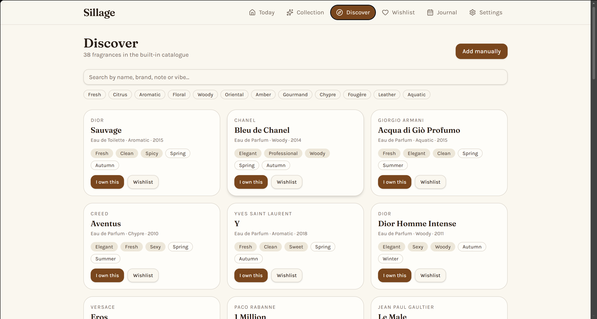

Open to graduate opportunities
SOFTWARE ENGINEER · LONDON
Tehj PatelUseful software.
Thoughtfully built.
I’m a software engineer in London, building AI-powered applications and automation tools around real people and practical problems.
Based in London, UK
Explore the work
AI. Automation. Real-world tools.
01 / SELECTED WORK
A closer look at the work.
From security workflows to everyday admin: explore the problems, the interfaces and the code behind my projects.
 Sentinel / Security operations dashboard
Sentinel / Security operations dashboardAI Security PlatformCurrently Building
Sentinel
An AI-assisted Security Operations and Incident Response platform designed to detect, investigate and respond to security incidents through controlled, auditable workflows.
View on GitHubCurrently Building
What it does
- Security event simulation, detection and correlation
- Deterministic 0–100 risk scoring and incident investigation
- Controlled AI analyst capabilities and role-based remediation approval
- Row Level Security, audit trails and secure backend workflows


AI Civic TechnologyFeatured
Local Lens
An AI-powered civic reporting platform that transforms resident-submitted images into structured reports, prioritises issues and helps organisations manage community problems more efficiently.
Education / Automation ToolFeatured
RoboThink Register
An automation tool designed to streamline student registration and attendance workflows for RoboThink, reducing repetitive administrative work and making session management more efficient.
View on GitHubCurrently Building
Also in progress
More in the making
Explorations in automation, fragrance discovery and football analytics.
Developer / Automation PlatformCurrently Building
ForgeFlow
A developer and automation platform currently under active development. The product direction and implementation are still being shaped, so this portfolio will document its concrete workflow and capabilities as they settle.
Currently Building
Fragrance Discovery PlatformCurrently Building
Sillage
A modern fragrance discovery application designed to help users explore and organise fragrances through an interactive, user-focused interface.

View on GitHubCurrently Building
Sports Analytics / Data PlatformCurrently Building
Champions League Analytics
An evolving football analytics platform that builds data-driven Champions League squads, analyses player attacking output and evaluates upcoming opponents throughout the competition.
Currently Building
Explore the wider collection of tools, games and experiments.
Robotics / Software EngineeringFeatured
SwiftBot Navigation System
A Java-based robotic navigation system that interprets QR-code commands and controls a physical robot through validated movement sequences.
Developer ToolFeatured
Portfolio Generator
A browser-based portfolio generator that turns user-provided information into a structured personal portfolio and downloadable PDF.
Web ApplicationFeatured
Weather Dashboard
An API-powered weather dashboard providing current conditions and forecasts through a responsive interface with dynamic weather visuals.

Security ToolFeatured
Secure Password Generator
A desktop password-generation utility using Python’s cryptographically secure secrets module, with configurable password requirements, strength feedback and secure generation.
Automation ToolOther
Music Organiser
Organises downloaded music into artist and album folders using file metadata, duplicate handling and a simple batch workflow.
GameOther
Snake
A Java Swing arcade game with pause and resume controls, sound effects, collision detection and persistent high scores.
GameOther
Rock Paper Scissors
A Tkinter game with best-of-three matches, player names, score tracking and JSON persistence.
CLI GameOther
CLI Adventure Game
A multi-level terminal adventure with input-driven gameplay, state progression and lightweight file-based saves.
Automation ToolOther
File Organiser
Sorts files into useful folders by extension and date, with duplicate handling and progress feedback.
Education AppOther
Stanmore College App
A C# and XAML college application with authentication, timetables, cafeteria information and student-facing resource screens.
GameOther
Card Game
A two-player Python card game with score tracking, authentication and external-file history for winners and leaderboards.
NLP / CLI ToolOther
Simple Translator
A command-line translation tool with automatic language detection, caching and saved results.
Image ToolOther
QR Code Generator
Creates customisable QR codes with logos, frames, colour schemes and image export.
Data ToolOther
Currency Converter
Converts currencies using live and historical exchange rates, with trend charts and cached API data.
UtilityOther
Unit Converter
A Tkinter desktop utility for converting between common units through a straightforward interface.
Web UtilityOther
Age Calculator App
A focused browser utility that calculates a user’s age from a supplied date through a clear, responsive interface.
CLI UtilityOther
Basic Weather App
A command-line weather lookup for multiple cities with unit selection and current conditions from OpenWeatherMap.
Profile PageOther
Social Links Profile
A responsive profile page for presenting social links with a clean, accessible layout.
02 / THE PERSON
A little about me.
I'm a computer science graduate with a strong interest in AI, full-stack development, and systems that make everyday tasks easier. I graduated from Brunel University London with Second Class (Upper Division) Honours (2:1), and my final year work focused on practical, user-facing software rather than theory for theory's sake.
I enjoy turning complex problems into simple, clean experiences. I care about usable interfaces, readable code and making complex workflows easier to navigate.
Alongside development, I've spent time teaching robotics and coding, which strengthened how I communicate, explain ideas, and support other people in a team environment.
Quick facts
RoleGraduate Software Engineer
DegreeComputer Science, 2:1
FocusAI, full-stack, automation
ExperienceRoboThink, since Oct 2022
LocationLondon
03 / TOOLKIT
What I work with.
Languages
Python
Java
JavaScript
TypeScript
C#
SQL
HTML
CSS
Frameworks & Platforms
React
Node.js
Supabase
PostgreSQL
Vite
Streamlit
Tkinter
RoCode robotics
Tools
Git & GitHub
Docker
Linux / Bash
pytest
Pandas
Matplotlib
VS Code
Figma
Areas
AI & Vision AI
Cybersecurity
Automation
Robotics
Data Analysis
Full-stack Web
04
Experience
Robotics and Coding Instructor — Master Instructor
Working at RoboThink since October 2022, progressing to Master Instructor.
- Delivered robotics, programming and STEM workshops to 500+ students aged 4–14
- Teach a Python scripting curriculum alongside robotics hardware
- Support SEN students and adapt lessons to different learning needs
- Train and support other instructors with lesson delivery and classroom management
- Run workshops and communicate with parents about student progress
- Built RoboThink Register — a software project connected to this teaching experience
05
Education
Brunel University London
BSc (Hons) Computer Science. Final year modules focused on software engineering, AI, and cybersecurity.
Stanmore College
BTEC Level 3 Extended Diploma in IT. Graduated with D*D*D* and built a strong foundation in programming and technical problem solving.
06
GitHub
Public GitHub profile / t3hj
—Public repositories
—Stars received
—Forks of my repositories
—Followers
Counts cover public repositories owned by this account.
Live stats load as you reach this section.
Recently updated projectsAll repositories ↗
Explore the code and development history behind my latest work.
Latest code pushes to original, non-archived public repositories.
07
Contact
Have a role or project in mind?
If you're hiring, I'd be glad to discuss how I can contribute as a graduate software engineer. You can also reach me on LinkedIn or GitHub.
tehjpatel@gmail.com
Availability
Open to graduate software engineering roles now.
Strongly interested in engineering teams working on product, AI, automation, and platform work.